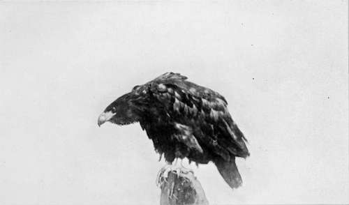

Collecting In The Dobrudscha. Part 5
Description
This section is from the book "Bird-Hunting Through Wild Europe", by R. B. Lodge. Also available from Amazon: Bird-Hunting Through Wild Europe.
Collecting In The Dobrudscha. Part 5
With no word of explanation, as soon as we could get our boat free and under weigh again, we sheered off and left them to make their way as best they could, while we continued our voyage towards a distant village. This we did not reach until long after dark, and by the time we had landed and entered a restaurant for some supper, I was quite ready for bed. By a restaurant I do not mean the comfortable room with marble-topped tables and velvet lounges we are used to at home. A restaurant in these regions is a rough wine-shop used by fishermen. The tables and wooden stools are of the plainest and roughest description, and the whole place has a dirty and unkempt appearance. Inside there are perhaps a dozen Russian fishermen drinking vodka, or tea, singing and shouting and making an inconceivable din. The wooden stools are sometimes used as missiles and weapons when the vodka has been indulged in too freely.
As a rule I must say I found the Russian a peaceable individual, except when exhilarated with vodka ; but I saw one who had been drinking all day seize a Tartar by the throat and fling him on to the floor merely for presuming to sit at the same table. The waiter, quite a boy, came up as they were struggling and felt the Tartar to make sure he carried no knife, as if he was used to such incidents.
But on another occasion, while I was engaged in blowing eggs under a tree, a drunken Russian who approached, as he said, to talk English to the Englishman, was seized and thrown into the Danube by the inspector, who always seemed to consider himself responsible for my safety. There he stood, complaining in a whimpering tone like a whipped baby. There would have been bloodshed in less than no time if such a thing had happened in Albania or Montenegro. Here, however, it is not customary to carry arms. The inspector, it is true, carried a revolver, but he had to enforce orders on an unruly body of men. On my next visit to these parts I was told he had been savagely attacked by a man, whose licence he had demanded for carrying a gun, on one of the remote islets in the Balta, and so beaten over the head with a gun-barrel that he had been left for dead.
At one thing I was agreeably surprised. On halting for the night we always managed to engage a bed at the house of some fisherman. And I must say that the sight of these rough, unkempt, bearded fishermen drinking vodka in their grogshops was not calculated to lead to great expectation for much comfort in their homes. But I always found a very clean, comfortable bed, a clean room tastefully decorated with home-made embroideries, and as a rule no mosquitoes and no fleas-a dwelling-place immensely superior to a Spanish ckoza or an Albanian hut, both in comfort and cleanliness. In one corner there was invariably a sacred picture in a little niche, with a small oil-lamp perpetually burning before it.
But these rooms were only engaged for the night, our custom being to be away soon after daybreak ; and when, as was the case here, we were delayed by the weather, heavy rain and contrary wind, we had no resting-place for the sole of our foot, except to wander from one restaurant to another through the long and weary day. How sick I used to get of them !
Immense numbers of sturgeon are caught here. There was one huge building nearly full of them packed in frozen snow. They were being dispatched to Tulcea in wagons. They are caught by buoying large hooks on a chain, against which the great fish come and scratch their backs and rub themselves, with disastrous results. It seems a curious method, but there is no doubt about its success.
I used sometimes to wish I had brought a fishing-rod and strong tackle. I believe that in this lower Danube fine sport could be had. Some of the fish run to immense size, five and six feet long. Along the banks one constantly passes willow-branches firmly stuck into the bank, generally at an eddy at a jutting corner. From the end of this rod dangles a hook, like a meat-hook in a butchers shop, at the end of a stout cord like a clothes-line. The bait, I believe, is a small fish. Sometimes from the Danube steamers I have seen these set rods buckling and bending with the struggles of some unseen monster in the depths below; but though we passed hundreds on this boat expedition I never saw anything caught. In fact, the hook was always unbaited whenever I was able to stop and haul up the line. I believe they take in this way a huge big-headed fish like a Cat-fish, which I have seen in the well-boats which bring live fish up to Budapest.
This river, too, produces the biggest, fattest, and juiciest-looking Mayflies I have ever seen. I wish I could have brought some back to introduce into our Trout streams. In spite of all our inquiries at each stopping-place we never got any reliable information about the Pelicans. The fishermen we questioned either professed ignorance or else contradicted themselves and one another so hopelessly that their evidence was never worth acting upon. And though I was constantly on the look-out for Pelicans, I never saw more than one passing glimpse of some flying at a great distance off, so far away in fact that even with a powerful glass I was unable to say for certain that they were Pelicans. The size of our boat made it necessary to keep to the deeper channels, and we were obliged to leave all the maze of reed-beds and shallow water which lay between untouched. It was quite possible to have passed a dozen colonies of Pelicans unseen and unnoticed ; and I feel certain that the fishermen were reluctant to give information to one in the official position of an Inspector of Fisheries. The probability is that they didn't want him to be making any stay in their neighbourhood, there being a natural antagonism between them, and the sooner he took his departure the better they would like it.
But if the search for Pelicans was a failure, we saw great numbers of other birds. Sea Eagles were constantly to be seen on the trees and stumps overhanging the water, while Marsh Harriers and Pallid Harriers quartered marsh and reed-bed. In the shallows fed multitudes of Night Herons (Nycticorax griseus), Glossy Ibis (Plegadis falcinellus), Purple Herons (Ardea purpurea), Grey Herons (A. cinerea), and Squacco Herons (A. ralloides). Bitterns boomed in the impenetrable morasses, and Crested Grebes (Podiceps cristatus), Red-necked Grebes (P. rubri-collis), and Black-necked Grebes (P. nigricollis) dived among; the water-lilies as their solitudes were dis-turbed by the passage of our boat.
In the cliffs of earth which we sometimes passed were great assemblages of Bee-eaters and Rollers, their brilliant plumage shining in the sun as they hovered in front of their nesting-holes, while Rollers and Hoopoes flitted about through the willow-trees which are such a characteristic feature of the banks of the Danube. Amid the impenetrable and tangled recesses of the reeds and sedges Savi's Warblers reeled their curious and monotonous song, invisible save to the closest search; and the harsh and grating-song- of countless numbers of Great Reed Warblers resounded on every side. White Storks were nesting in most of the villages, as on the roofs of the solitary fishing-huts in the most remote localities.
Sea Eagle (Haliaetus Albicilla)
Huge dragon-flies of gorgeous colours darted hither and thither through the dense clouds of mosquitoes, doing their best to keep down the numbers of these tormentors. On wellnigh every reed-stem the empty pupa-skins of dragon-flies clung like pale ghosts, most weird-looking and curious to behold.
When at last we returned to Tulcea, after ten days' sojourn in the wilderness, it had to be acknowledged that the search for Pelecanus onocrotahis, for this season at least, must be accounted a failure. And it was too late in the year, July, to expect to do any good with the other species nesting in the Dobrudscha. We had seen young Swans and Wild Geese, and Herons. Young Night Herons in the brown spotted plumage were flying about with their parents, and it was obviously useless to remain any longer.
Continue to:
- prev: Collecting In The Dobrudscha. Part 4
- Table of Contents
- next: XIV. Collecting In The Dobrudscha. Part 6